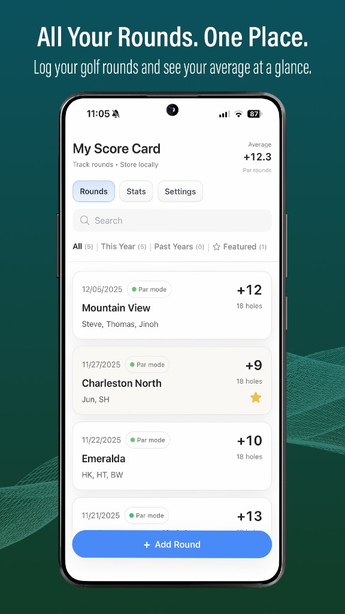
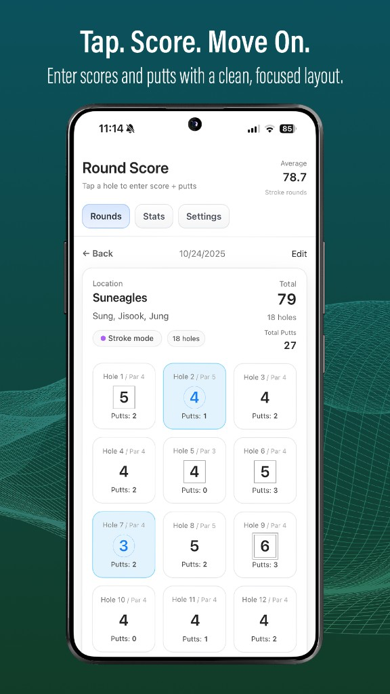
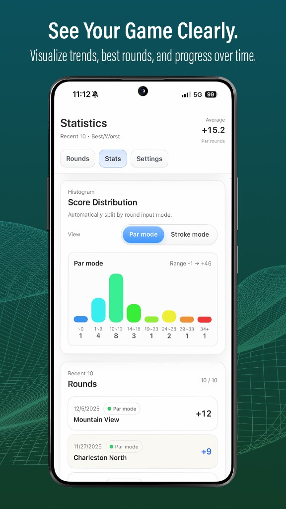
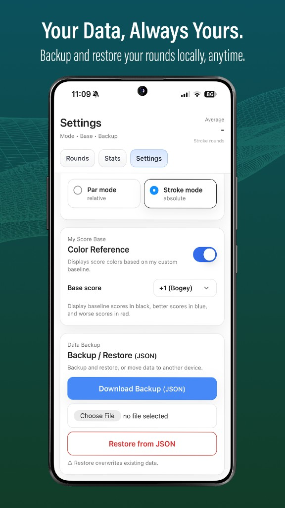
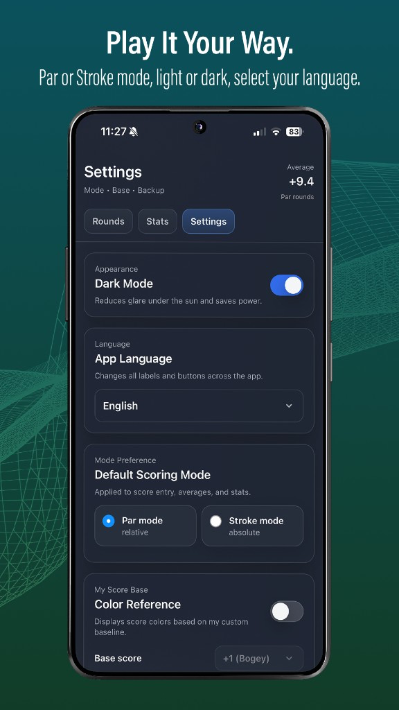

My Golf Score Card
Track rounds. Score locally. No login, no ads – your data stays on your phone.
Overview
My Score Card is a simple golf score tracking app for players who want to record rounds and view basic statistics without unnecessary complexity. It works fully offline and keeps data stored locally on the device.
Key features
- Track golf rounds in Par mode or Stroke mode
- Hole-by-hole score and putt tracking
- Clean round list with featured favorites
- Statistics and score distribution charts
- Dark Mode for outdoor play
- Multi-language support
- Local data storage with JSON backup and restore
- No account required, no ads, no tracking
Key ideas
- Private by default – no account, no ads, no tracking; free forever; rounds stay on the phone unless you export them
- Hole by hole – Par or Stroke mode; enter score and putts per hole, then see totals and averages instantly
- Stats that stay quiet – score distribution charts, featured rounds, Dark Mode, and JSON backup when you change devices





Previous
← My Password Vault
Next
–